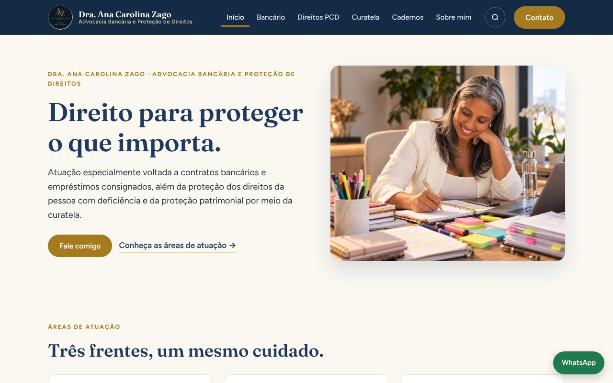
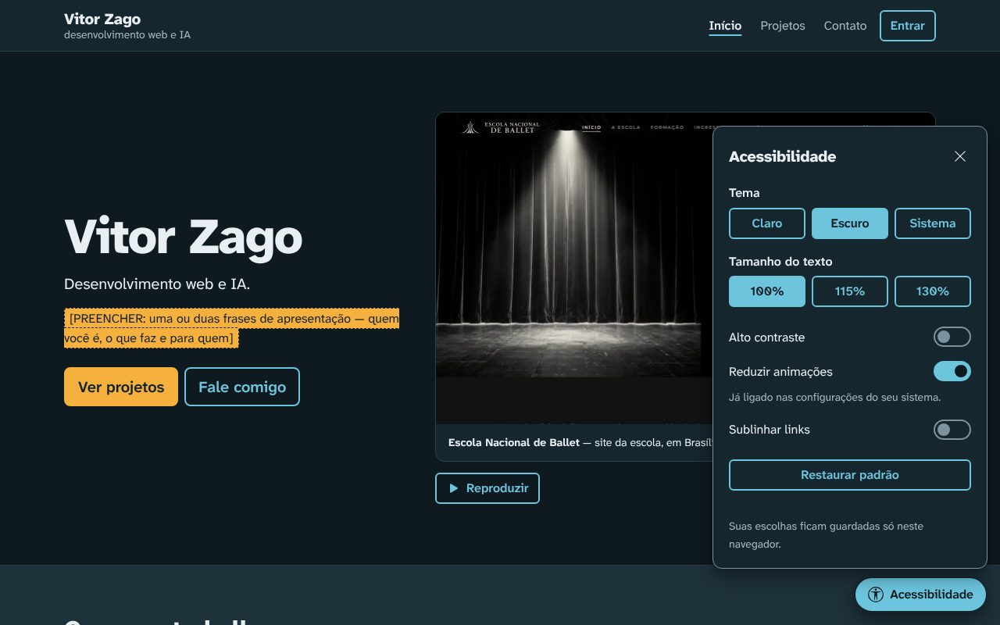

Site
Escola Nacional de Ballet
Site de uma escola pública de ballet em Brasília. [PREENCHER: o que você fez neste projeto]
- Next.js
- React
Desenvolvimento web e IA.
[PREENCHER: uma ou duas frases de apresentação — quem você é, o que faz e para quem]

Escola Nacional de Ballet — site da escola, em Brasília

Ana Zago Advocacia — site do escritório, em Brasília

Este portfólio — temas claro e escuro e painel de acessibilidade
Parado porque “Reduzir animações” está ligado. Use “Reproduzir” para passar as imagens.
[PREENCHER: o que acontece neste passo, em uma ou duas frases. Ex.: como você entende o que o cliente precisa]
[PREENCHER: o que acontece neste passo. Ex.: como você planeja a solução]
[PREENCHER: o que acontece neste passo. Ex.: como você constrói e mostra o andamento]
[PREENCHER: o que acontece neste passo. Ex.: como você entrega e acompanha depois]
Site
Site de uma escola pública de ballet em Brasília. [PREENCHER: o que você fez neste projeto]

Site
Site de um escritório de advocacia de Brasília. [PREENCHER: o que você fez neste projeto]
Site
Projeto final da disciplina Desenvolvimento de Interfaces (CEUB): quatro páginas, temas claro e escuro e painel de acessibilidade, seguindo a WCAG 2.1 nível AA.